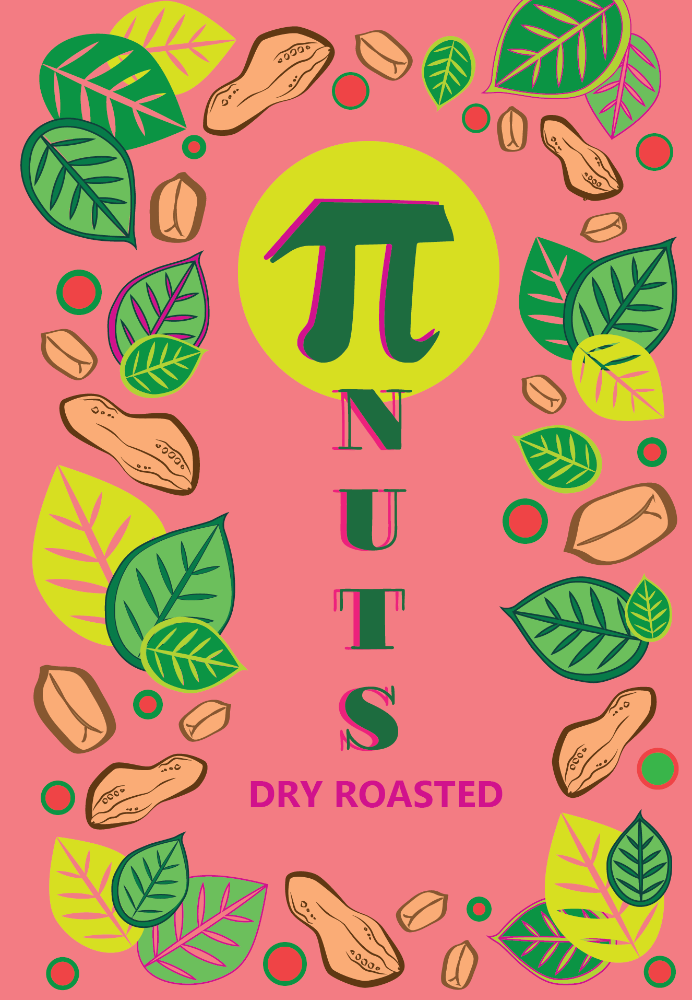
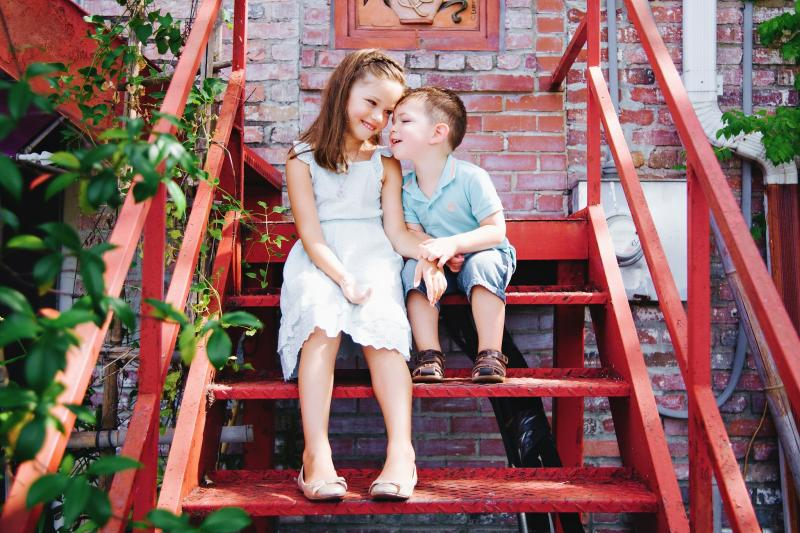
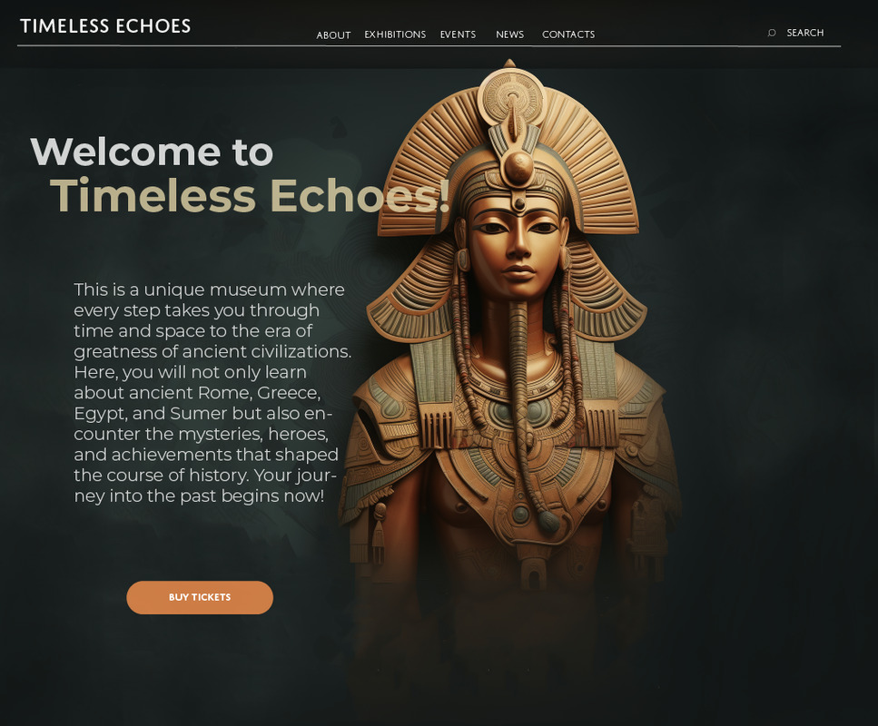
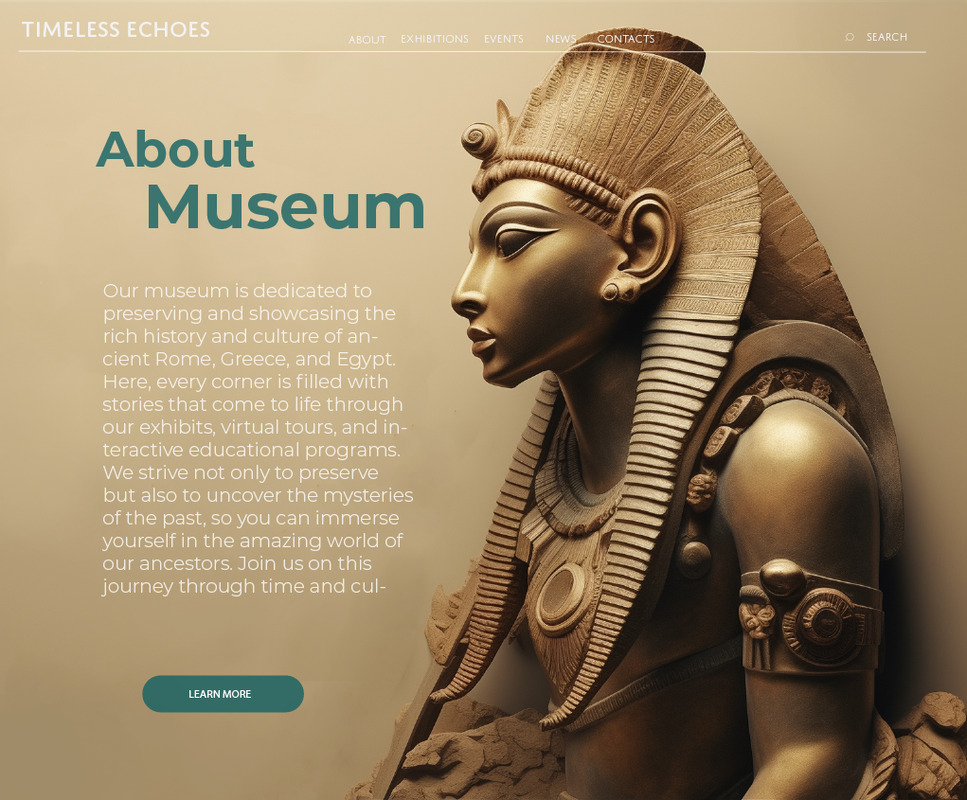
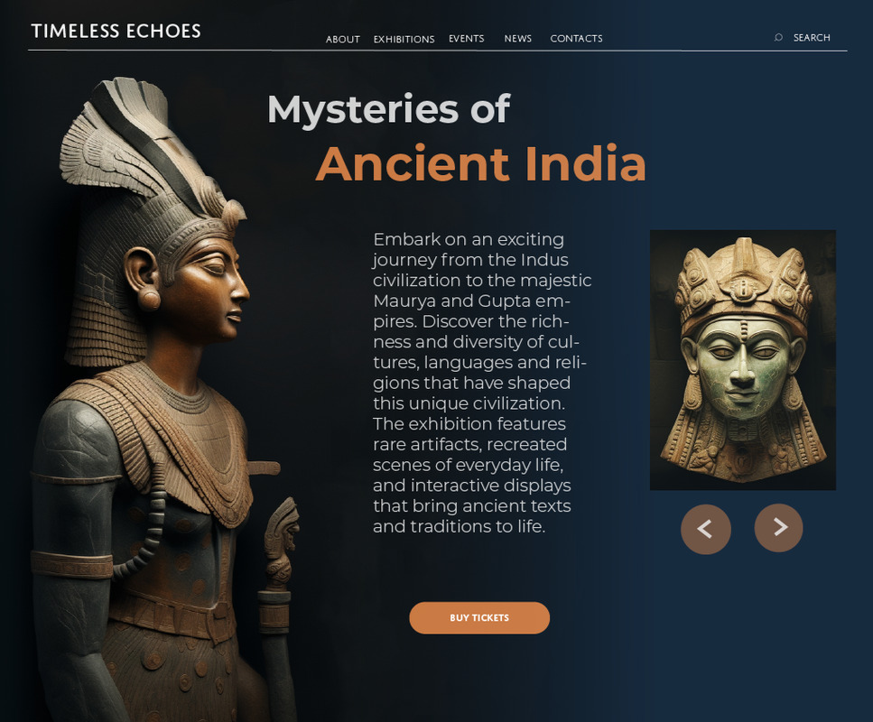

PORTFOLIO
What I'm good at:
Graphic Design
Graphic design is the art of telling stories through color, shape, and composition. I strive to create visually stunning yet targeted designs that not only attract attention but also convey key brand messages. My graphic design creativity spans a wide range of media, from print to digital layouts.
Introducing 'Pi Nuts' – more than just nuts.
With bold shades of pink and cheerful motifs of nature, my packaging design skillfully combines aesthetics with functionality, turning a healthy snack into a visual feast. 'Pi Nuts' is not only about nutritious nuts; it is a manifesto of taste and style, reflected in every detail, from the first glimpse of the packaging to the last nut in the pack.
Motion Desigh
Movement brings life to graphic design, and I use this power to amplify brand and product stories. I bring ideas to life through logo animation, educational videos, and interactive elements that make each project unique.
Animation and video editing
Project Name
Brief description of the project. In progress.
UI/UX design
Creating intuitive and aesthetically pleasing interfaces is my passion and professional field. I focus on user experience to make every interaction with a product not only functional, but also memorable.
Web design and prototyping
Website of the Museum of Ancient Civilizations
I made this site for a museum of ancient civilizations with an engaging minimalist design, focusing on ease of perception of information, but still attracts attention with its uniqueness.
  